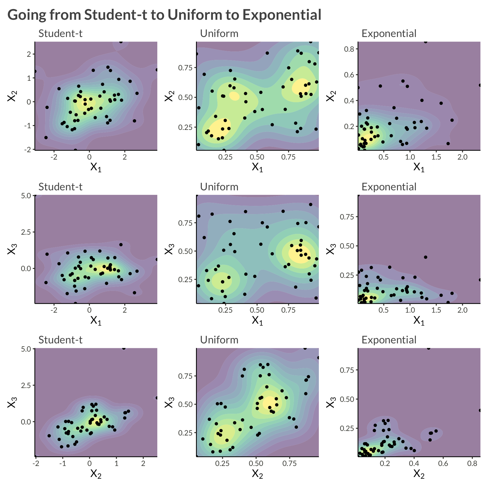

Code
library(tidyverse)
library(cmdstanr)
library(bayesplot)
library(patchwork)
library(gt)
theme_set(bggjphd::theme_bggj())library(tidyverse)
library(cmdstanr)
library(bayesplot)
library(patchwork)
library(gt)
theme_set(bggjphd::theme_bggj())This post continues our series on copulas in Stan by introducing the t-copula and comparing it with the Gaussian copula we covered previously. We’ll focus particularly on how the t-copula’s tail dependence makes it more suitable for modeling extreme events.
Other posts in this series:
This post assumes you’re familiar with the basics of copulas covered in the previous posts. If you’re new to copulas, I recommend starting with the introduction post.
Before diving into the mathematical details, let’s understand why we need the t-copula in the first place. Consider the following scenarios:
The t-copula addresses these limitations while maintaining many of the nice properties of the Gaussian copula.
In this post I might use Student-t and t exchangeably
The Student-t distribution with \(\nu\) degrees of freedom can be viewed as arising from a normally distributed variable whose variability is adjusted by a random scaling factor derived from a chi-square distribution.
Formally, if we let \(Z \sim \mathcal{N}(0,1)\) and \(V \sim \chi^2_\nu\) be independent, then the t-distributed variable \(T\) can be defined as:
\[ T = \frac{Z}{\sqrt{V/\nu}}. \]
Here, \(Z\) represents a standardized normal deviate, and \(V/\nu\) acts like a variance estimate. As \(\nu\) grows large, the t-distribution approaches the standard normal distribution, and for smaller \(\nu\), the distribution exhibits heavier tails, capturing extreme values more frequently.
The t-copula is derived from the multivariate t-distribution, just as the Gaussian copula comes from the multivariate normal. It has two key parameters:
The degrees of freedom parameter \(\nu\) controls the heaviness of the tails:
One of the most intuitive ways to understand the t-copula is through its stochastic representation:
This shared scaling creates tail dependence:
Before we proceed further, let’s formally define tail dependence. For a bivariate copula C, the upper and lower tail dependence coefficients are defined as:
\[ \begin{aligned} \lambda_U &= \lim_{u \to 1} P(U_2 > F_2^{-1}(u) | U_1 > F_1^{-1}(u)) \\ &= \lim_{u \to 1} \frac{1-2u+C(u,u)}{1-u} \\ \lambda_L &= \lim_{u \to 0} P(U_2 \leq F_2^{-1}(u) | U_1 \leq F_1^{-1}(u)) \\ &= \lim_{u \to 0} \frac{C(u,u)}{u} \end{aligned} \]
Intuitively, \(\lambda_U\) measures the probability that one variable is extremely large given that another is extremely large, while \(\lambda_L\) measures the probability that one variable is extremely small given that another is extremely small.
Due to radial symmetry, the t-copula has identical lower- and upper-tail dependence, given by:
\[ \lambda_U = \lambda_L = 2t_{\nu+1}\left(-\sqrt{\frac{(\nu + 1)(1-\rho)}{1+\rho}}\right) \]
where:
Some key properties of this tail dependence:
t_tail_dependence <- function(rho, nu) {
2 * pt(-sqrt((nu + 1) * (1 - rho) / (1 + rho)), nu + 1)
}
crossing(
nu = c(2, 4, 8, 16, 32, 64, 128),
rho = seq(-1, 1, length.out = 400)
) |>
mutate(
lambda = t_tail_dependence(rho, nu)
) |>
ggplot(aes(rho, lambda, color = as.factor(nu))) +
geom_line(
linewidth = 1.5
) +
scale_x_continuous(
expand = c(0, 0),
limits = c(-1, 1)
) +
scale_y_continuous(
expand = c(0, 0),
limits = c(0, 1)
) +
scale_colour_brewer(
palette = "Blues",
direction = -1
) +
labs(
x = expression(rho),
y = expression(lambda[U] == lambda[L]),
color = expression(nu),
title = "Asymptotic tail dependence of the t-copula"
)
crossing(
nu = seq(1, 32, length.out = 100),
rho = 0
) |>
mutate(
lambda = t_tail_dependence(rho, nu)
) |>
ggplot(aes(nu, lambda)) +
geom_line(linewidth = 1.5) +
scale_x_continuous(
expand = c(0, 0),
limits = c(0, 32)
) +
scale_y_continuous(
expand = c(0, 0),
limits = c(NA, 0.35),
trans = "log10",
labels = scales::label_log()
) +
labs(
x = expression(nu),
y = expression(lambda[U] == lambda[L]),
subtitle = "Even for zero correlation, the t-copula has non-zero tail dependence"
)
Now that we have the intuition, let’s look at the formal definition. Let \(\mathbf X = (X_1, \dots, X_D)\) be a multivariate random variable with marginal distribution functions \(F_i\) and dependence according to the t-copula. Their joint distribution function and density can be written: \[ \begin{aligned} H(\mathbf{X}) &= t_{\nu,\Sigma}\left(t_\nu^{-1}(F_1(X_1)), \dots, t_\nu^{-1}(F_D(X_D))\right) \\ h(\mathbf{X}) &= c\left(F_1(X_1), \dots, F_D(X_D)\right)\prod_{i=1}^D f_i(X_i) \end{aligned} \]
where:
The log-density of the t-copula can be written as: \[ \begin{aligned} \log c(\mathbf{u}|\nu,\Sigma) &= \log t_{\nu,\Sigma}(\mathbf{z}) - \sum_{i=1}^D \log t_\nu(z_i) \\ z_i &= t_\nu^{-1}(u_i) \end{aligned} \]
where \(t_{\nu,\Sigma}\) is the multivariate t density with correlation matrix \(\Sigma\) and \(t_\nu\) is the univariate t density.
For completeness, here’s the explicit bivariate density:
\[ c(u_1,u_2) = \frac{\Gamma(\frac{\nu+2}{2})\Gamma(\frac{\nu}{2})}{\Gamma(\frac{\nu+1}{2})^2}\frac{(1 + \frac{z_1^2 + z_2^2 - 2\rho z_1z_2}{\nu(1-\rho^2)})^{-\frac{\nu+2}{2}}}{\sqrt{1-\rho^2}(1 + \frac{z_1^2}{\nu})^{\frac{\nu+1}{2}}(1 + \frac{z_2^2}{\nu})^{\frac{\nu+1}{2}}} \]
However, we’ll use the hierarchical representation for implementation, which is both more intuitive and numerically stable.
Unlike the Gaussian copula, the t-copula exhibits tail dependence. The upper and lower tail dependence coefficients are:
\[ \lambda_U = \lambda_L = 2t_{\nu+1}\left(-\sqrt{\frac{(\nu + 1)(1-\rho)}{1+\rho}}\right) \]
This symmetry (\(\lambda_U = \lambda_L\)) means the t-copula treats both tails equally.
1 Lower values of \(\nu\) produce heavier tails and increase tail dependence. However, taking \(\nu\) extremely close to zero is more of a theoretical construct than a practical modeling choice. In most applications, \(\nu\) is chosen within a range that provides heavier tails than the Gaussian case, but not so extreme as to be unrealistic.
Like the Gaussian copula:
where \(\rho\) is the correlation coefficient.2
2 Note that these concordance measures are identical to the Gaussian copula because multiplying by the scaling factor \(\sqrt{\nu/W}\) affects the magnitude of the variables but preserves their ranks. Since Kendall’s \(\tau\) and Spearman’s \(\rho\) only depend on the ranks of the data, not their actual values, they remain unchanged from the Gaussian case.
Let’s use the same example as in the previous post, except now with three variables, \(Y_1\) and \(Y_2\) and \(Y_3\). We will model each asset’s marginal distribution as exponential, and apply a multivariate t-copula to model their dependence. Alltogether this can be written \[ \log h(\mathbf{Y}) = \log t_{\nu, \Sigma}(z_1, z_2, z_3 \vert \Sigma) - \log t_\nu(z_1, z_2, z_3) + \sum_{i=1}^3 f_{\mathrm{Exp}}(Y_i \vert \lambda_i) \]
To sample from this data-generating process we
n_obs <- 50
rho12 <- 0.8
rho13 <- 0.1
rho23 <- 0.4
lambda1 <- 2
lambda2 <- 4
lambda3 <- 6
df <- 4
sigma <- matrix(
c(
1, rho12, rho13,
rho12, 1, rho23,
rho13, rho23, 1
),
nrow = 3
)
L <- chol(sigma)
set.seed(1)
W <- rchisq(n_obs, df = df)
Z <- matrix(rnorm(n = n_obs * 3), nrow = 3)
Z <- sqrt(df / W) * t(L %*% Z)
d <- tibble(
z1 = Z[, 1],
z2 = Z[, 2],
z3 = Z[, 3],
time = seq_len(n_obs)
) |>
pivot_longer(
c(-time),
names_to = "variable",
names_transform = parse_number,
values_to = "z"
) |>
inner_join(
tibble(
variable = c(1, 2, 3),
lambda = c(lambda1, lambda2, lambda3)
)
) |>
mutate(
u = pt(z, df = df),
y = qexp(u, rate = lambda)
)d |>
select(-lambda) |>
pivot_longer(c(z, u, y)) |>
pivot_wider(names_from = variable, names_prefix = "v") |>
mutate(
name = fct_relevel(name, "z", "u") |>
fct_recode(
"Student-t" = "z",
"Uniform" = "u",
"Exponential" = "y"
)
) |>
group_by(n2 = name) |>
group_map(
\(data, ...) {
# X2 vs X1
p12 <- data |>
ggplot(aes(v1, v2)) +
geom_density_2d_filled(alpha = 0.5) +
geom_point(size = 1.4) +
scale_x_continuous(
expand = c(0, 0)
) +
scale_y_continuous(
expand = c(0, 0)
) +
theme(legend.position = "none") +
labs(
subtitle = unique(data$name),
x = expression(X[1]),
y = expression(X[2])
)
# X3 vs X1
p13 <- data |>
ggplot(aes(v1, v3)) +
geom_density_2d_filled(alpha = 0.5) +
geom_point(size = 1.4) +
scale_x_continuous(
expand = c(0, 0)
) +
scale_y_continuous(
expand = c(0, 0)
) +
theme(legend.position = "none") +
labs(
subtitle = unique(data$name),
x = expression(X[1]),
y = expression(X[3])
)
# X3 vs X2
p23 <- data |>
ggplot(aes(v2, v3)) +
geom_density_2d_filled(alpha = 0.5) +
geom_point(size = 1.4) +
scale_x_continuous(
expand = c(0, 0)
) +
scale_y_continuous(
expand = c(0, 0)
) +
theme(legend.position = "none") +
labs(
subtitle = unique(data$name),
x = expression(X[2]),
y = expression(X[3])
)
wrap_plots(p12, p13, p23, nrow = 3)
}
) |>
wrap_plots(
ncol = 3,
widths = c(1, 1,1 )
) +
plot_annotation(
title = "Going from Student-t to Uniform to Exponential"
)
The Stan implementation has three main components:
Similar to the Gaussian copula, we need to implement the t-copula log density:
real t_copula_lpdf(vector u, matrix L, real nu) {
int D = num_elements(u);
vector[D] x;
real logp;
// Transform U to X via the inverse t CDF
for (d in 1:D) {
x[d] = student_t_icdf(u[d], nu);
}
// Multivariate t density minus sum of univariate t densities
logp = multi_student_t_cholesky_lpdf(x | nu, rep_vector(0, D), L);
for (d in 1:D) {
logp -= student_t_lpdf(x[d] | nu, 0, 1);
}
return logp;
}The key differences from the Gaussian copula are:
Unlike the Gaussian copula where we could use Stan’s built-in inv_Phi(), we need to implement the t-distribution’s quantile function ourselves. The implementation in the Stan model follows numerical approximations for different ranges of the input values to ensure stability and accuracy.
The function is too long to paste here, but it is based on Sean Pinkey’s implementation from the Stan forums
The model follows a similar structure to the Gaussian copula but with the addition of the degrees of freedom parameter:
parameters {
vector<lower=0>[D] lambda;
cholesky_factor_corr[D] L;
real<lower=1> nu; // degrees of freedom for the t-copula
}
model {
matrix[N, D] U;
for (i in 1:N) {
// Transform data to uniforms using exponential CDF
for (j in 1:D) {
target += exponential_lpdf(Y[i, j] | lambda[j]);
U[i, j] = exponential_cdf(Y[i, j] | lambda[j]);
}
// Add the t-copula contribution
target += t_copula_lpdf(to_vector(U[i, ]) | L, nu);
}
// Priors
target += lkj_corr_cholesky_lpdf(L | 1.0);
nu ~ gamma(2, 0.1); // Prior for degrees of freedom
lambda ~ exponential(1);
}For posterior predictive checks, we need to:
generated quantities {
corr_matrix[D] Sigma = multiply_lower_tri_self_transpose(L);
matrix[N, D] yrep;
{
matrix[N, D] U_rep;
matrix[N, D] Z_rep;
for (i in 1:N) {
Z_rep[i] = (multi_student_t_cholesky_rng(nu, rep_vector(0, D), L))';
for (j in 1:D) {
U_rep[i, j] = student_t_cdf(Z_rep[i, j] | nu, 0, 1);
yrep[i, j] = exponential_icdf(U_rep[i, j], lambda[j]);
}
}
}
}The main differences from the Gaussian copula’s generated quantities block are:
Prepare the data and sample from the model.
Y <- d |>
select(time, variable, y) |>
pivot_wider(names_from = variable, values_from = y) |>
select(-time) |>
as.matrix()
stan_data <- list(
Y = Y,
N = nrow(Y),
D = ncol(Y)
)
example1 <- cmdstan_model(here::here("posts", "t-copula", "Stan", "t-copula.stan"))
result <- example1$sample(
data = stan_data,
chains = 4,
seed = 1,
parallel_chains = 4,
show_messages = FALSE,
show_exceptions = FALSE
)result$summary(c("lambda", "Sigma[1,2]", "Sigma[1,3]", "Sigma[2,3]", "nu")) |>
gt() |>
fmt_number()| variable | mean | median | sd | mad | q5 | q95 | rhat | ess_bulk | ess_tail |
|---|---|---|---|---|---|---|---|---|---|
| lambda[1] | 1.53 | 1.52 | 0.20 | 0.19 | 1.22 | 1.86 | 1.00 | 3,394.27 | 2,825.60 |
| lambda[2] | 3.57 | 3.55 | 0.50 | 0.51 | 2.79 | 4.45 | 1.00 | 2,607.47 | 2,528.29 |
| lambda[3] | 6.08 | 6.05 | 0.79 | 0.78 | 4.85 | 7.44 | 1.00 | 2,922.44 | 2,475.93 |
| Sigma[1,2] | 0.43 | 0.44 | 0.12 | 0.12 | 0.21 | 0.61 | 1.00 | 2,873.68 | 2,756.21 |
| Sigma[1,3] | 0.19 | 0.20 | 0.13 | 0.14 | −0.04 | 0.41 | 1.00 | 2,875.84 | 2,802.58 |
| Sigma[2,3] | 0.74 | 0.75 | 0.08 | 0.07 | 0.60 | 0.84 | 1.00 | 3,029.44 | 2,799.22 |
| nu | 3.55 | 3.29 | 1.23 | 1.07 | 2.00 | 5.88 | 1.00 | 3,499.92 | 2,999.41 |
mcmc_trace(
result$draws(),
pars = c("lambda[1]", "lambda[2]", "Sigma[1,2]", "nu")
)yrep <- result$draws("yrep", format = "matrix")
y <- as.numeric(Y)
ppc_dens_overlay(
y = y[seq_len(n_obs)],
yrep = yrep[1:100, seq_len(n_obs)]
) +
ggtitle(expression(X[1]))
ppc_dens_overlay(
y = y[n_obs + seq_len(n_obs)],
yrep = yrep[1:100, n_obs + seq_len(n_obs)]
) +
ggtitle(expression(X[2]))
ppc_dens_overlay(
y = y[2 * n_obs + seq_len(n_obs)],
yrep = yrep[1:100, 2 * n_obs + seq_len(n_obs)]
) +
ggtitle(expression(X[2]))While the t-copula addresses some limitations of the Gaussian copula through tail dependence, it still maintains symmetries that may not be appropriate for all applications. In our next post, we’ll explore Archimedean copulas, which can model:
Stay tuned for “Understanding the Clayton Copula” where we’ll begin our exploration of this important family of copulas.